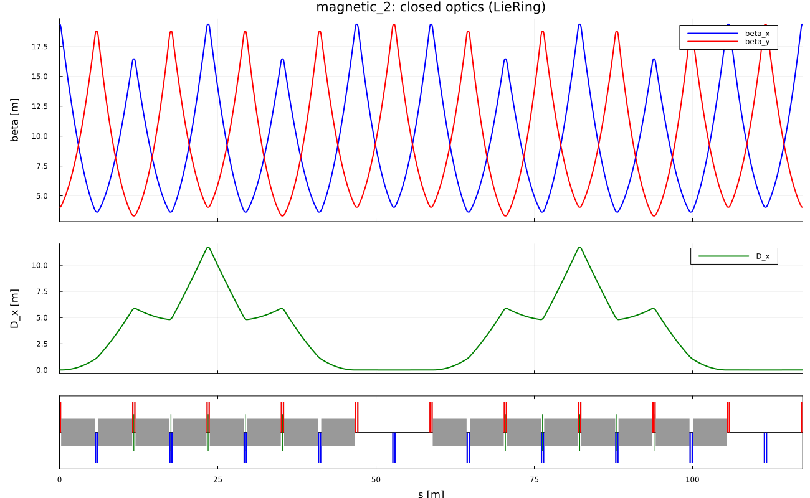

Linear optics
The linear map of an element is the closed form of the quadratic Lie transformation $\exp(:f_2:)$. With $\mathcal{H}_{ij}=\partial^2 H/\partial z_i\partial z_j|_0$,
\[R=\exp(L\,S\,\mathcal{H}).\]
This is not a textbook transport matrix: the Hessian comes from the same $H$ that generates the nonlinear factor. For plots along $s$ the matrices are multiplied element by element. For one-turn optics of the ring, $\mathtt{observables}$ reads the linear factor $\mathcal{F}.R$ of the Lie product, not a second, independent matrix product.
With $\cos\mu=\tfrac12\mathrm{Tr}M_x$,
\[\beta=\frac{M_{12}}{\sin\mu},\qquad \alpha=\frac{M_{11}-M_{22}}{2\sin\mu},\]
and the closed dispersion solves $(I-M_4)D=M_{\cdot 6}$. Momentum compaction to first order:
\[\alpha_0=\frac{1}{\gamma_0^2}-\frac{(l|\delta)_{\mathrm{closed}}}{C} =\frac1C\oint h\,D\,\mathrm{d}s.\]
Twiss and dispersion propagated in slices close after one turn to machine precision.
